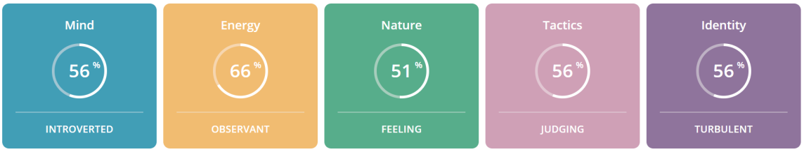

TYPE: Turbulent Defender
CODE: ISFJ-T
ROLE: Sentinel
STRATEGY: Constant Improvement
Every person has their own unique story, here is a sneak peek into mine.
My name is Cyril Kunjumon Daniel, currently I am a second-year student at the University of Wollongong in Dubai pursuing Bachelor’s in Computer Science with a major in Digital Systems Security. My aim is too pass out with a high distinction and on my path of learning be able to gain enough experience so that I am able to overcome problems in relation to my field and life.
I enjoy meeting new people and searching for new challenges. I inspire to be a coder and a cyber security officer working with well known companies. Although, my initial passion was to do something in relation with astronomy, but as I grew up, I realized physics is not my cup of tea.
Overall, I am a hard worker and dedicated individual, and I am looking forward to a new beginning once I am done with university.
Personality Traits
